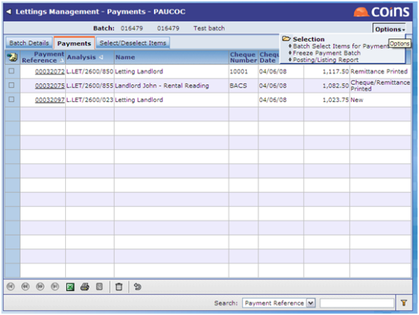

Cash
The “Cash” menu contains the option for processing the receipts and payments associated with a tenant and landlord.
- Payment Run Workbench allows you to automatically create a batch of landlord payments.This includes options to automatically and manually select/ deselect landlord items to pay. From here once the batch is frozen the , file and remittances can be generated.

- Cash Entry allows you to enter manual cash receipts and payments. These can then be allocated to debit/ credit notes.
In addition you can also enter cash receipts and payments through the .
- Allocate Cash allows you to allocate any posted cash that was left unallocated at entry to debit/ credit notes.
- Cash allows you to cash receipts and payments.